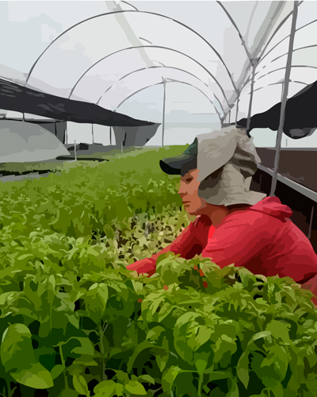
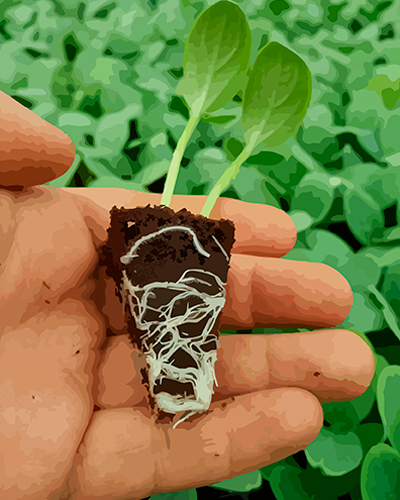
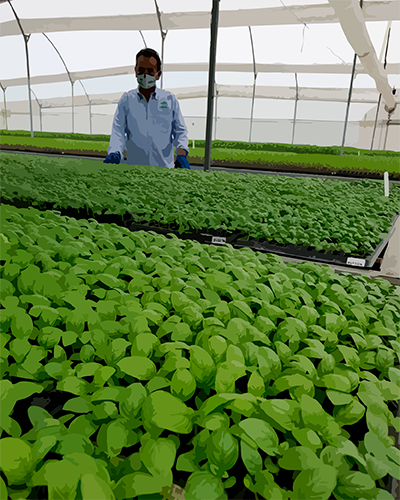
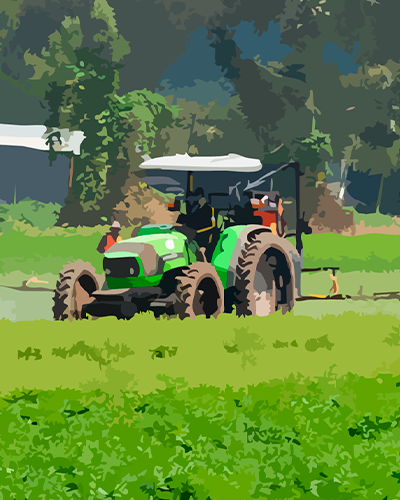
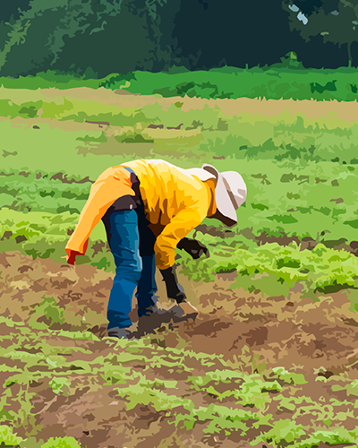
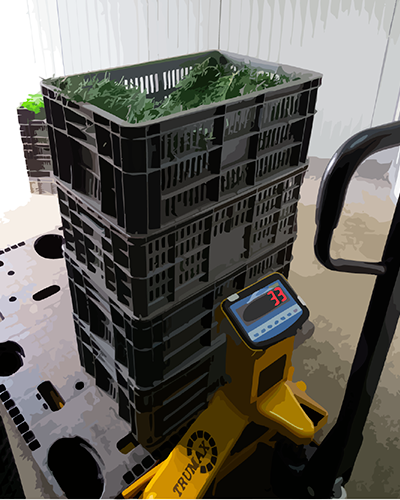
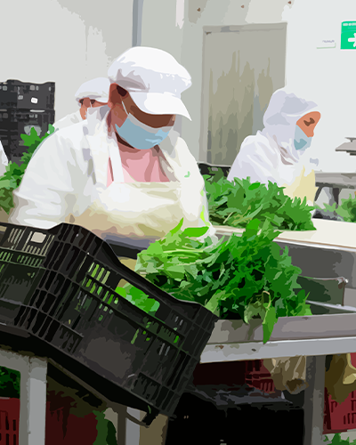
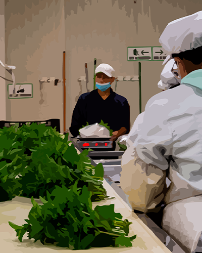
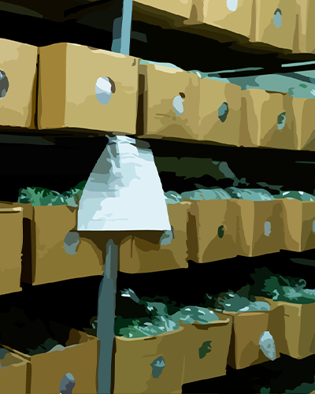

Trazabilidad estricta desde cultivo hasta la
exportación, asegurando calidad y control

Semilleros propios
Producimos nuestros semilleros directamente en el invernadero, garantizando calidad desde el origen.
Material vegetal certificado
Utilizamos semillas certificadas para asegurar plantas sanas, productivas y con trazabilidad.


Siembra y control del cultivo
Realizamos el proceso de siembra y acompañamos cada bandeja con controles técnicos del material vegetal.
Manejo del cultivo en campo
Realizamos labores de cultivo como desyerbe, preparación del suelo y cuidado del crecimiento de las plantas.


Cosecha en el momento ideal
Recolectamos cuidadosamente el producto en los tiempos exactos definidos para cada lote.
Recepción en poscosecha
Clasificamos el producto por lote y superficie, registrando su trazabilidad desde el campo.


Selección de calidad
Verificamos parámetros de frescura, tamaño y apariencia para cumplir con los estándares del mercado internacional.
Empaque y trazabilidad completa
Empacamos con absorbente y etiquetado por semana, día, producto y lote, asegurando conservación y control del origen.


Cargue y exportación
El producto se enfría, se embala y se entrega directamente al vehículo exportador, acompañado de toda la documentación necesaria.